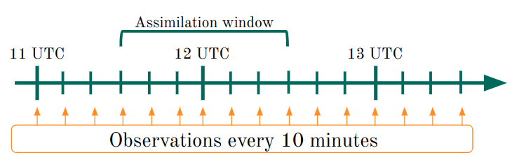

GSI tutorial
This tutorial is intended to showcase some of the capabilities of the GSI system. For a more complete set of examples, please visit the official website for GSI: variational methods and [Kalman Filter](https://dtcenter.org/community-code/ensemble-kalman-filter-system-enkf) methods.
The tutorial uses the serial Ensemble Square Root Filter (EnSRF) algorithm but could also be used to run the Local Ensemble Kalman Filter (LETKF) algorithm if the GSI system code is compiled using a intel compiler1. It also uses a version of the code that have the capability of assimilating GOES-16 observations.
Moving parts
The first component to run the tutorial is the GSI system code that can be found in this repository: github.com/paocorrales/comGSIv3.7_EnKFv1.3. Alternatively, the original code without modifications is available here. The repository includes an example script compile_gsi_yakaira to compile the code. In any case it is important to include the option -DBUILD_WRF=ON to use the ENKF algorithm with WRF.
Then, clone or download the repository with the scripts, namelists and specific config files from: https://github.com/paocorrales/tutorial_gsi. This repository also includes a bash scripts to download the necessary data to run the tutorial. This data is also available as a Zenodo record.
Observations
The observations included in this tutorial are:
Conventional observations: surface and upper air observations (meteorological stations, radiosondes, airplanes, etc.). It also includes wind derived from satellite. The bufr file used here is created from the prepbufr file at 12 UTC of 2018/11/22 and includes also observations from automatic station networks in Argentina and other countries.
- File:
cimap.20181122.t12z.01h.prepbufr.nqc
Radiance observations: radiances from polar and geostationary satellites. Observations from polar satellites comes from the Global Data Assimilation System (GDAS) Model: https://www.nco.ncep.noaa.gov/pmb/products/gfs. The GOES-16 observations (ABI sensor) are derived from the public netcdf files published by NOAA.
Files:
abig16.20181122.t12z.bufr_d1bamua.20181122.t12z.bufr_dssmisu.20181122.t12z.bufr_d1bhrs4.20181122.t12z.bufr_dairsev.20181122.t12z.bufr_dmtiasi.20181122.t12z.bufr_d1bmhs.20181122.t12z.bufr_datms.20181122.t12z.bufr_dsatwnd.20181122.t12z.bufr_d
Background
The background files includes the 10-member ensemble generated using the WRF-ARW numerical model for a regional domain centered in the center and northern Argentina. For more information about the model configuration see https://doi.org/10.1016/j.atmosres.2022.106456
The 00 subfolder includes a 10-member ensemble and the ensemble mean to run the GSI system using the ENKF version.
The 01 to 10 subfolders include the background at the analysis time and files every 10 minutes inside the assimilation window to run the GSI system using the FGAT method
Structure
By cloning the tutorial repo and downloading the associated data with the provied script you will end up with the following folder structure.
tutorial_gsi/
├── download_data.sh
├── fix
│ ├── global_satinfo.txt
│ ├── satbias_ang
│ ├── satbias_in
│ └── satbias_pc_in
├── GUESS
│ └── 20181122120000
│ ├── 00
│ │ ├── wrfarw.ensmean
│ │ ├── wrfarw.mem001
│ │ ├── wrfarw.mem002
│ │ ├── wrfarw.mem003
│ │ ├── wrfarw.mem004
│ │ ├── wrfarw.mem005
│ │ ├── wrfarw.mem006
│ │ ├── wrfarw.mem007
│ │ ├── wrfarw.mem008
│ │ ├── wrfarw.mem009
│ │ └── wrfarw.mem010
│ ├── 01
│ │ ├── wrf_inou1
│ │ ├── wrf_inou2
│ │ ├── wrf_inou3
│ │ ├── wrf_inou4
│ │ ├── wrf_inou5
│ │ ├── wrf_inou6
│ │ └── wrf_inou7
│ ├── 02
│ │ ├── wrf_inou1
│ │ ├── wrf_inou2
│ │ ├── wrf_inou3
│ │ ├── wrf_inou4
│ │ ├── wrf_inou5
│ │ ├── wrf_inou6
│ │ └── wrf_inou7
│ ├── 03
│ │ ├── wrf_inou1
│ │ ├── wrf_inou2
│ │ ├── wrf_inou3
│ │ ├── wrf_inou4
│ │ ├── wrf_inou5
│ │ ├── wrf_inou6
│ │ └── wrf_inou7
│ ├── 04
│ │ ├── wrf_inou1
│ │ ├── wrf_inou2
│ │ ├── wrf_inou3
│ │ ├── wrf_inou4
│ │ ├── wrf_inou5
│ │ ├── wrf_inou6
│ │ └── wrf_inou7
│ ├── 05
│ │ ├── wrf_inou1
│ │ ├── wrf_inou2
│ │ ├── wrf_inou3
│ │ ├── wrf_inou4
│ │ ├── wrf_inou5
│ │ ├── wrf_inou6
│ │ └── wrf_inou7
│ ├── 06
│ │ ├── wrf_inou1
│ │ ├── wrf_inou2
│ │ ├── wrf_inou3
│ │ ├── wrf_inou4
│ │ ├── wrf_inou5
│ │ ├── wrf_inou6
│ │ └── wrf_inou7
│ ├── 07
│ │ ├── wrf_inou1
│ │ ├── wrf_inou2
│ │ ├── wrf_inou3
│ │ ├── wrf_inou4
│ │ ├── wrf_inou5
│ │ ├── wrf_inou6
│ │ └── wrf_inou7
│ ├── 08
│ │ ├── wrf_inou1
│ │ ├── wrf_inou2
│ │ ├── wrf_inou3
│ │ ├── wrf_inou4
│ │ ├── wrf_inou5
│ │ ├── wrf_inou6
│ │ └── wrf_inou7
│ ├── 09
│ │ ├── wrf_inou1
│ │ ├── wrf_inou2
│ │ ├── wrf_inou3
│ │ ├── wrf_inou4
│ │ ├── wrf_inou5
│ │ ├── wrf_inou6
│ │ └── wrf_inou7
│ └── 10
│ ├── wrf_inou1
│ ├── wrf_inou2
│ ├── wrf_inou3
│ ├── wrf_inou4
│ ├── wrf_inou5
│ ├── wrf_inou6
│ └── wrf_inou7
├── namelists
│ ├── comenkf_namelist.sh
│ └── comgsi_namelist.sh
├── OBS
│ ├── 1bamua.20181122.t12z.bufr_d
│ ├── 1bhrs4.20181122.t12z.bufr_d
│ ├── 1bmhs.20181122.t12z.bufr_d
│ ├── abig16.20181122.t12z.bufr_d
│ ├── airsev.20181122.t12z.bufr_d
│ ├── atms.20181122.t12z.bufr_d
│ ├── cimap.20181122.t12z.01h.prepbufr.nqc
│ ├── mtiasi.20181122.t12z.bufr_d
│ ├── satwnd.20181122.t12z.bufr_d
│ └── ssmisu.20181122.t12z.bufr_d
├── README.md
├── run_enkf.sh
└── run_gsi.shA GSI folder will be created when running the run_gsi.sh script and a ENKF folder will be created when running the run_enkf.sh that performs the analysis.
Running GSI
As we focus on running GSI with the Kalman Filter method, the first stem is to run GSI as Observation operator. So, the system will compare the observations with the background state and and save that information in diagnostic files.
The example used in this tutorial is relatively small, so while you may need a HPC system for real cases, this one can be run in a small server or even a computer with at least 10 processors.
Here are the ~20 first lines of the script run_gsi.sh:
#PBS -N TEST-1-GSI
#PBS -m abe
#PBS -l walltime=03:00:00
#PBS -l nodes=1:ppn=24
#PBS -j oe
BASEDIR=/home/paola.corrales/datosmunin3/tutorial_gsi # Path to the tutorial folder
GSIDIR=/home/paola.corrales/datosmunin3/comGSIv3.7_EnKFv1.3 # Path to where the GSI/EnKF code is compiled
FECHA_INI='11:00:00 2018-11-22' # Init time (analysis time - $ANALISIS)
ANALISIS=3600 # Assimilation cycle in seconds
OBSWIN=1 # Assimilation window in hours
N_MEMBERS=10 # Ensemble size
E_WE=200 # West-East grid points
E_SN=240 # South-North grid points
E_BT=37 # Vertical levels
export OMP_NUM_THREADS=1
GSIPROC=10
set-xIn principle, you only need to change BASEDIR and GSIDIR variables that are the path to the tutorial folder and the path to where GSI is compiled (the code expects to find a build folder with the executable files.
So, with that, you can run the script or send it to a queue.
Possible issues
The script assume many things, in particular, where the configuration files, observations and background files are located. If you chance the structure of the folders and files, make sure to do the same in the script.
The other very possible issue is machine dependent. GSI creates files with the information of the observations and background called pe\*something. Those files are later concatenated in diag_<type_of_obs>* files. This process depends on listing all the types of observations with some regex magic:
listall=`ls pe* | cut -f2 -d"." | awk '{print substr($0, 0, length($0)-2)}' | sort | uniq `
for type in $listall; do
count=`ls pe*${type}_${loop}* | wc -l`
if [[ $count -gt 0 ]]; then
cat pe*${type}_${loop}* > diag_${type}_${string}.${ANAL_TIME} # For binary diag files
fi
doneI had to slightly change that first line every time I changed machines. So, if you don’t see a bunch of diag* files in the GSI folder after running the script this is probably the reason.
Did it work?
If you get a exit 0 at the end, it probably means that everything went well. However, I recommend you check a few things to make sure everything went really well.
- Check that all the
diag*files are there. You will get 1 file per member and ensemble mean for each type of observation. If you don’t see any of these files, check the Issues section. If you are missing the files for 1 type of observation, that probably means that the bufr file with the observations was not read properly or that is missing in the folder. Check if the script is linking the correct file to theGSIfolder. - Check the statistics for each type of observations. You will find this information in the
fit_<obs>.<date>files. Each one may have different information or structure depending on the type of observation, but make sure to check the number of observations read and keep by the system. This information is also included in thestdoutfile, you can searREAD_*to find the section in the file.
If you got an error number instead and, if you are lucky, the error code may be described in gsimain.f90.
Running ENKF
The second step to run GSI with the Kalman Filter method is running the code that performs the analysis. GSI will take the information provided by the first step (the diag* files) an calculate the final analysis.
Similarly to the first step, the script it’s almost ready to run and you only need to change BASEDIR and GSIDIR variables.
#PBS -N tutorial-enkf
#PBS -m abe
#PBS -l walltime=03:00:00
#PBS -l nodes=2:ppn=96
#PBS -j oe
BASEDIR=/home/paola.corrales/datosmunin3/tutorial_gsi # Path to the tutorial folder
GSIDIR=/home/paola.corrales/datosmunin3/comGSIv3.7_EnKFv1.3 # Path to where the GSI/EnKF code is compiled
FECHA_INI='11:00:00 2018-11-22' # Init time (analisis time - $ANALISIS)
ANALISIS=3600 # Assimilation cycle in seconds
OBSWIN=1 # Assimilation window in hours
N_MEMBERS=10 # Ensemble size
E_WE=200 # West-East grid points
E_SN=240 # South-North grid points
E_BT=37 # Vertical levels
ENKFPROC=20
export OMP_NUM_THREADS=1
set -xThe script will look for the GSI folder to link the diag* files and copy the background files to modify them into the analysis.
Possible issues
This script also assume where the configuration files, background and diag* are located. So, if something is not working, check first if all the files are being copied or linked correctly.
It also includes a line to list all the types of observation and it is machine dependent, so that another source of problems. You can always type the list of observations by hand but you will need to update that every time.
Did it work?
If you get a exit 0 at the end, it probably means that everything went well. Other things you can check:
stdoutfile: the main thing to check is the innovation statistics for the prior and posterior (search for “innovation”) and the statistics for satellite brightness temperature. It will tell you how many observations were assimilated a few more details to get a sense of the impact of the observations.Check the difference between the analysis and the background files. This requires a little more work but it is important to check this difference for at least one of the ensemble members. You can also do it for the ensemble mean, but note that the GSI system does not calculate the analysis ensemble mean, you will need to do it independently.
Running GSI using the FGAT method
The tutorial is configured to use the FGAT (First Guess at Appropriate Time) methods, this means that will GSI attempt to read multiple time level backgrounds a show in the following diagram.

There is no option in the namelist or configuration files to use the FGAT method. To “activate” this option GSI needs to find the appropiate files in appropriate folder. In this example we have 7 files in total for each member, 1 background file at the assimilation time plus 3 files every 10 minutes before and after the assimilation time.
So, GSI will expect to find files called wrf_inou1 to wrf_inou7. The fonder structure looks like this:
GUESS/
└── 20181122120000
├── 00
│ ├── wrfarw.ensmean
│ ├── wrfarw.mem001
│ ├── wrfarw.mem002
│ ├── wrfarw.mem003
│ ├── wrfarw.mem004
│ ├── wrfarw.mem005
│ ├── wrfarw.mem006
│ ├── wrfarw.mem007
│ ├── wrfarw.mem008
│ ├── wrfarw.mem009
│ └── wrfarw.mem010
├── 01
│ ├── wrf_inou1
│ ├── wrf_inou2
│ ├── wrf_inou3
│ ├── wrf_inou4
│ ├── wrf_inou5
│ ├── wrf_inou6
│ └── wrf_inou7
├── 02
│ ├── wrf_inou1
│ ├── wrf_inou2
│ ├── wrf_inou3
│ ├── wrf_inou4
│ ├── wrf_inou5
│ ├── wrf_inou6
│ └── wrf_inou7
├── 03
│ ├── wrf_inou1
│ ├── wrf_inou2
│ ├── wrf_inou3
│ ├── wrf_inou4
│ ├── wrf_inou5
│ ├── wrf_inou6
│ └── wrf_inou7
├── 04
│ ├── wrf_inou1
│ ├── wrf_inou2
│ ├── wrf_inou3
│ ├── wrf_inou4
│ ├── wrf_inou5
│ ├── wrf_inou6
│ └── wrf_inou7
├── 05
│ ├── wrf_inou1
│ ├── wrf_inou2
│ ├── wrf_inou3
│ ├── wrf_inou4
│ ├── wrf_inou5
│ ├── wrf_inou6
│ └── wrf_inou7
├── 06
│ ├── wrf_inou1
│ ├── wrf_inou2
│ ├── wrf_inou3
│ ├── wrf_inou4
│ ├── wrf_inou5
│ ├── wrf_inou6
│ └── wrf_inou7
├── 07
│ ├── wrf_inou1
│ ├── wrf_inou2
│ ├── wrf_inou3
│ ├── wrf_inou4
│ ├── wrf_inou5
│ ├── wrf_inou6
│ └── wrf_inou7
├── 08
│ ├── wrf_inou1
│ ├── wrf_inou2
│ ├── wrf_inou3
│ ├── wrf_inou4
│ ├── wrf_inou5
│ ├── wrf_inou6
│ └── wrf_inou7
├── 09
│ ├── wrf_inou1
│ ├── wrf_inou2
│ ├── wrf_inou3
│ ├── wrf_inou4
│ ├── wrf_inou5
│ ├── wrf_inou6
│ └── wrf_inou7
└── 10
├── wrf_inou1
├── wrf_inou2
├── wrf_inou3
├── wrf_inou4
├── wrf_inou5
├── wrf_inou6
└── wrf_inou7The files in folders 01 to 10 are the ones used during the assimilation. The files in fonder 00 where used to calculate the ensemble mean and can be also used to run GSI without the FGAT option. For that it is necessary to uncomment line 102 in the run_gsi.sh script:
# BK_FILE_mem=${BK_ROOT}/wrfarw.memand change lines 600 and 601 from:
cp ${BK_ROOT}/${ensmemid}/wrf_inou* .
BK_FILE_ANA=wrf_inou4to:
cp ${BK_ROOT}/00/wrfarw_mem0${ensmemid}.
BK_FILE_ANA=${BK_FILE}That way, GSI will ignore the other folder and only use 1 background file for each member.
To check if GSI is doing what’s suppose to, we need to check the stdout file created during the observation operator step.
CONVERT_NETCDF_MASS: problem with flnm1 = wrf_inou1, Status = -1021Means that GSI did not find all the background files and only used the one at the analysis time.
Instead if you see something this:
convert wrf_inou1 to sigf01
iy,m,d,h,m,s= 2018 11 22 11 30 0
dh1 = 1
rmse_var = SMOIS
ndim1 = 3
ordering = XYZ
staggering = N/A
start_index = 1 1 1 0
end_index = 199 239 4 0You’ll know that GSI is using the FGAT method. The example here shows that GSI found the wrf_inout1 file that is renaming to sig01 and then, information related to the time and domain characteristics. This will be repeated for each background file. In this case the first file corresponds to th 11:30 UTC of November 2018 and after that there is 1 file every 10 minutes.
This period between background files (10 minutes) is defined by the user when saving the background files. Again there is no configuration option to do this. GSI relies on finding the files in the especified folder.
The run_gsi.sh and run_enkf.sh scripts mentioned in this tutorial are derived from the example scripts provided with the Community GSIV3.7 Online Tutorial.
Footnotes
The current version of the GSI system compiled using gnu returns an error when the LETKF algorithm is used.↩︎